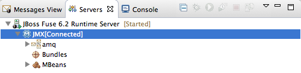
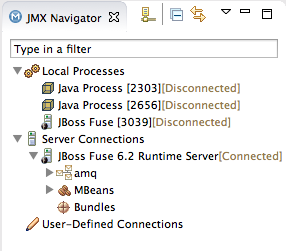
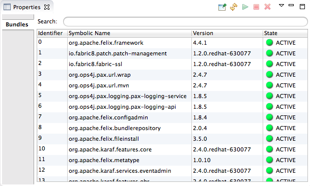

After you start up a configured server, it appears in Servers panel and in JMX Navigator, under the ServerConnections node. You may need to expand the Server Connections node to see the server.
To publish and test your Fuse project application on the running server, you must first connect to it. You can connect to a running server either in Servers panel or in JMX Navigator.
![[Note]](imagesdb/note.png) | Note |
|---|---|
Servers panel and JMX Navigator are synchronized with regards to server connections, so connecting to a server in Servers panel also connects it in JMX Navigator, and vice versa. |
In Servers panel, expand the server runtime to expose its
JMX[Disconnected]node.Double-click the
JMX[Disconnected]node:
In JMX Navigator, select the server to which you want to connect under the Server Connections node.
Double-click it:

In either the Servers panel or JMX Navigator, expand the server runtime tree to expose the Bundles node, and select it.
The tooling populates Properties view with a list of bundles that are installed on the server:
 Using Properties view's Search tool, you can search for bundles by their Symbolic Name or by their Identifier, if you know it. As you type in the symbolic name or the identifier, the list updates, showing only the bundles that match the current search string.
Note Alternatively, you can issue the osgi:list command in view to see a generated list of bundles installed on the JBoss Fuse server runtime. The tooling uses a different naming scheme for OSGi bundles displayed by the osgi:list command.
In the <build> section of project's
pom.xmlfile, you can find the bundle's symbolic name and its bundle name (OSGi) listed in themaven-bundle-pluginentry. For more details, see Verifying the project was published to the server.